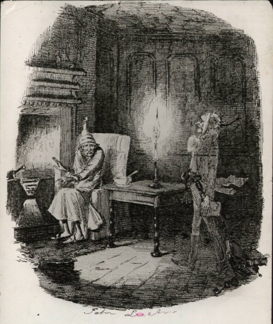
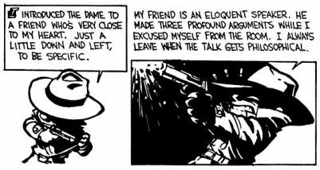
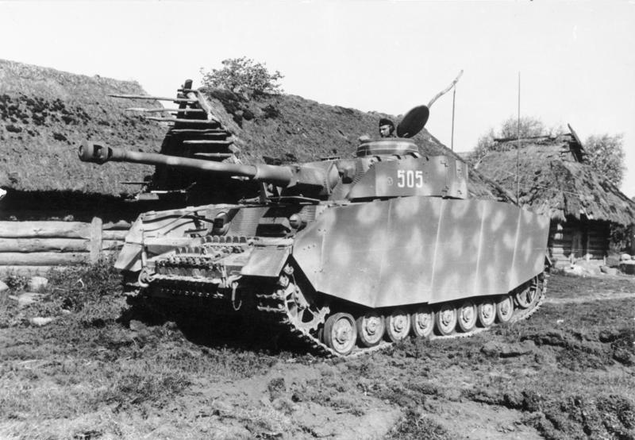
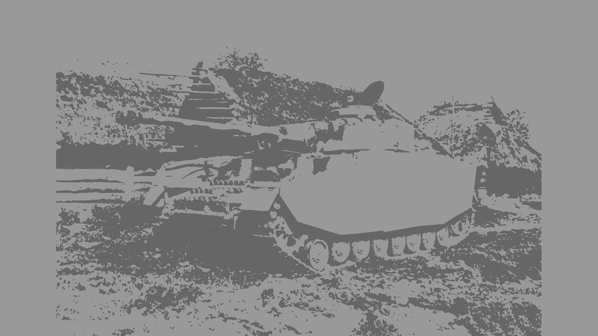
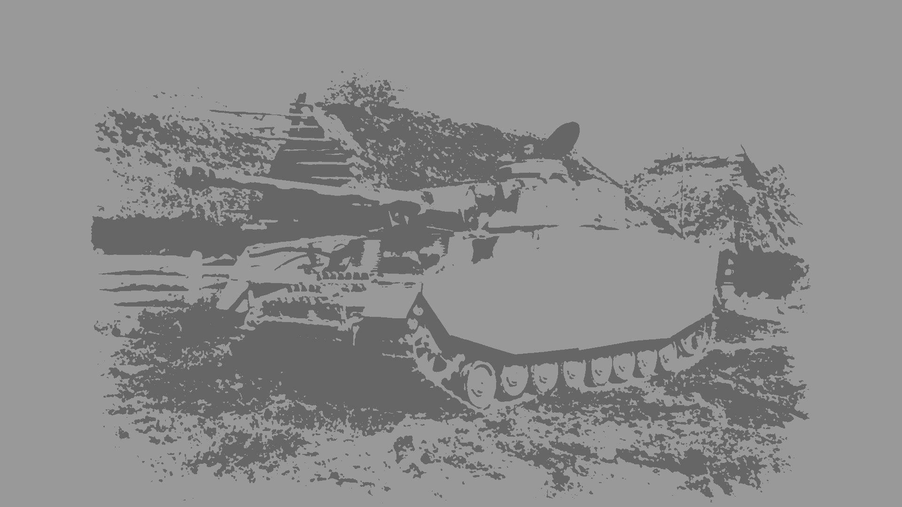

TwoToner
This program recolorizes images to two colors, rescales the image to the resolution of the monitor, and applies smoothing to the edges of the image so that there are no obtrusive edges.
I use this mostly for my personal desktop wallpapers. Some background images looked nice, but made it difficult to see desktop icons on. Additionally, I like multi-monitor setups and have a rotation of images, so I think it looks nicer if all my desktop backgrounds have a unified color scheme and style. Finally, I like the two-color, high-contrast art style.
I wanted an art style resembling:
or

Given the source image:

Simply recoloring and rescaling (maintaining the aspect ratio) the image to my monitor's resolution (1920x1080) results in:
 It is very clear where the image ends, and it looks very ugly.
With the edge smoothing applied:

The edge smoothing makes makes the letterboxing look far more natural. This is important because I did not want to stretch the image and ruin the proportions, nor did I want ugly letterboxing. Regarding the colors, I originally went with black and white, but it was too high-contrast and made it difficult to see desktop icons, so I changed both to what they are now.
Written in C++ using SDL2 and OpenGL.